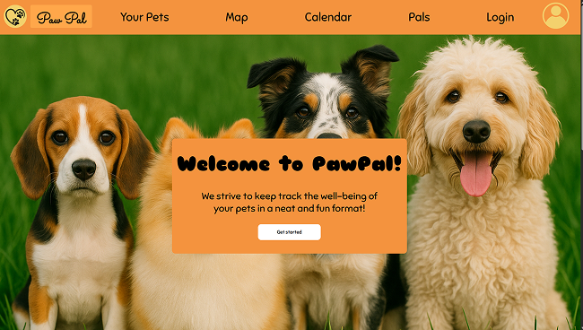
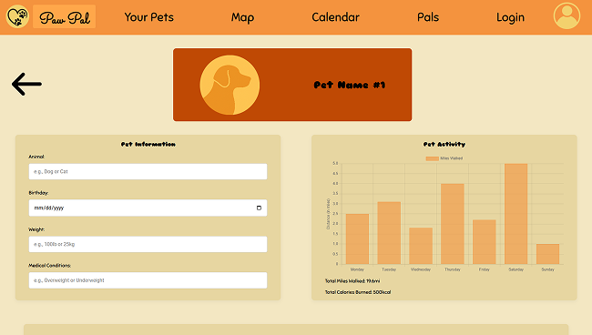
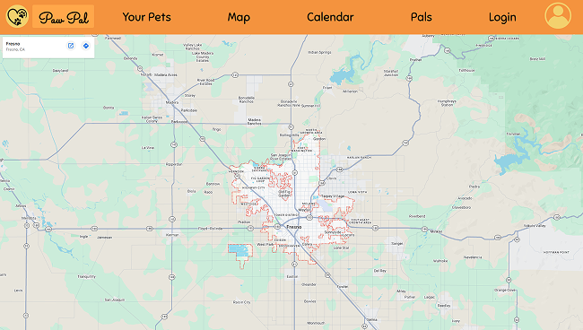
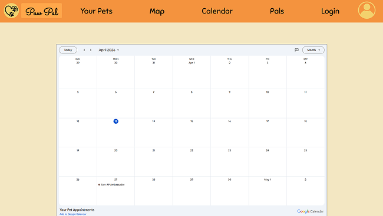

Website Images




PawPal Overview:
PawPal is a project that I and a partner were tasked to create as a mock website for a pet wellness tracker. We were tasked to create this project using our knowledge of HTML, CSS, and media queries; with the addition of JavaScript with (at the time) AI support.
Technology Used:
- Some technological tools used for this project were A.I. platforms such as Chatgpt, Google Gemini, and Claude.
- Not just A.I. was used, but websites like w3Schools, geeksforgeeks, and MDN were used as well to see human examples and explanations.
- We also used Figma, which is an application that allows us to create our wireframes as well as our Lo-fi and Hi-fi designs.


Concepts Learned:
- From this project I learned how to create toggle-able buttons using relative and absolute positions in CSS
- Not only that but I learned to make the CSS more responsive for media queries by using view width and view height to style pages, padding, etc. This encouraged me to sway more to responsive units instead of the generic px unit.
Challenges & Solutions:
- A problem that I had faced when engaging in this project were my styling units. I had used many pixel units instead of units that would be responsive to media queries. When my partner told me this, the solution I had was to look back at my code and adjust the fitting sizes and other code that relied on the old pixel values.
- Another problem that I had was the alignment of our settings page. The alignment was not center justified like how we wanted it and honestly I could not figure it out with my own eyes. The solution to fix this problem was to ask for help from peers, my instructor, and A.I.
- Additionally, I had another problem which was to make the sign in and sign out pages look identical to each other. To solve this problem, I had to constantly switch back and forth between pages to make sure both looked identical.

Habits of the mind in action
- Persistence:When my CSS animations (using @keyframes) were not firing correctly across different browsers, I spent three days debugging the rendering engine quirks rather than simplifying the design.
- Communication:I sought feedback from peers and my instructor during class to ensure the navigation's "drop-down" functionality was intuitive for first-time visitors.